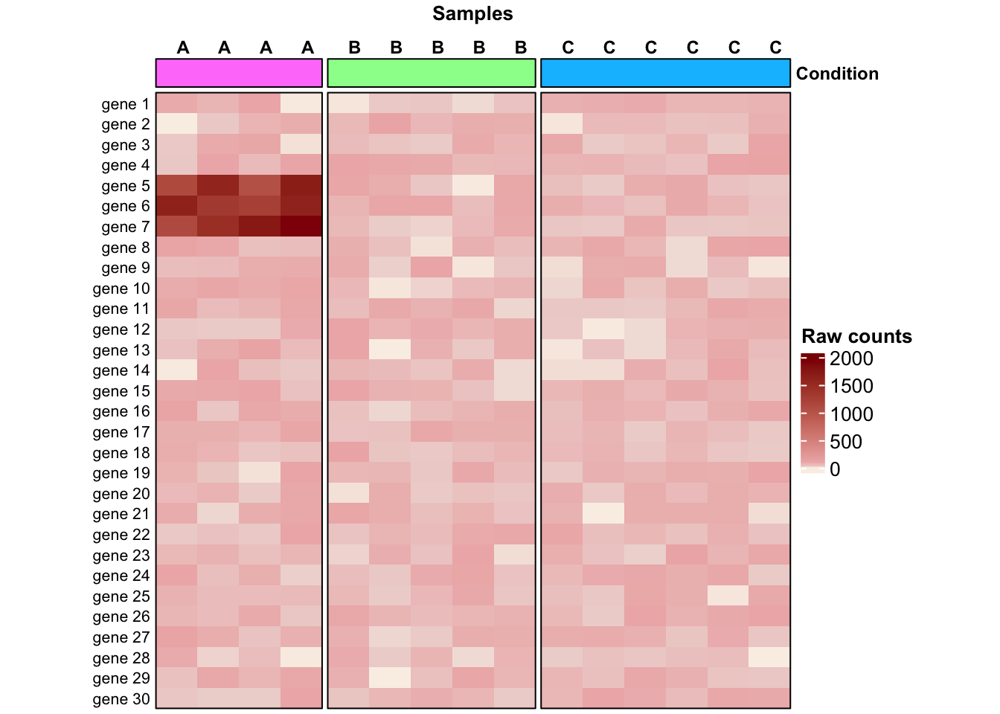

library(ComplexHeatmap)Loading required package: grid========================================
ComplexHeatmap version 2.22.0
Bioconductor page: http://bioconductor.org/packages/ComplexHeatmap/
Github page: https://github.com/jokergoo/ComplexHeatmap
Documentation: http://jokergoo.github.io/ComplexHeatmap-reference
If you use it in published research, please cite either one:
- Gu, Z. Complex Heatmap Visualization. iMeta 2022.
- Gu, Z. Complex heatmaps reveal patterns and correlations in multidimensional
genomic data. Bioinformatics 2016.
The new InteractiveComplexHeatmap package can directly export static
complex heatmaps into an interactive Shiny app with zero effort. Have a try!
This message can be suppressed by:
suppressPackageStartupMessages(library(ComplexHeatmap))
========================================library(circlize)========================================
circlize version 0.4.16
CRAN page: https://cran.r-project.org/package=circlize
Github page: https://github.com/jokergoo/circlize
Documentation: https://jokergoo.github.io/circlize_book/book/
If you use it in published research, please cite:
Gu, Z. circlize implements and enhances circular visualization
in R. Bioinformatics 2014.
This message can be suppressed by:
suppressPackageStartupMessages(library(circlize))
========================================## 15 samples across 3 conditions
conditions <- rep(c("A", "B", "C"), c(4, 5, 6))
## Raw counts for 30 genes across the 15 samples
expr <- matrix(data = sample(c(1:100), replace = T, size = 450), nrow = 30)
colnames(expr) <- conditions
rownames(expr) <- paste("gene", 1:30)
## Introduce 3 highly-expressed genes in condition A only
expr[c("gene 5", "gene 6", "gene 7"), 1:4] <- sample(c(1000:2000), replace = T, size = 12)
## Plot
col_anno <- HeatmapAnnotation(
Condition = anno_block(gp = gpar(fill = c("orchid1", "palegreen1", "deepskyblue1"), col = "black"), show_name = T),
annotation_name_gp = gpar(fontsize = 9, fontface = "bold"))
Heatmap(expr,
name = "Raw counts",
top_annotation = col_anno,
cluster_rows = FALSE,
cluster_columns = FALSE,
col = colorRamp2(c(1, 10, 100, 2000), c("linen", "mistyrose2", "rosybrown2", "darkred")),
column_split = conditions,
border = TRUE,
show_row_names = TRUE,
column_title = "Samples",
column_title_gp = gpar(fontsize = 10, fontface = "bold"),
column_names_side = "top",
column_names_gp = gpar(fontsize = 9, fontface = "bold"),
row_names_gp = gpar(fontsize = 8),
row_names_side = "left",
column_names_rot = 0,
heatmap_width = unit(12.5, "cm"),
heatmap_height = unit(12.5, "cm")
)